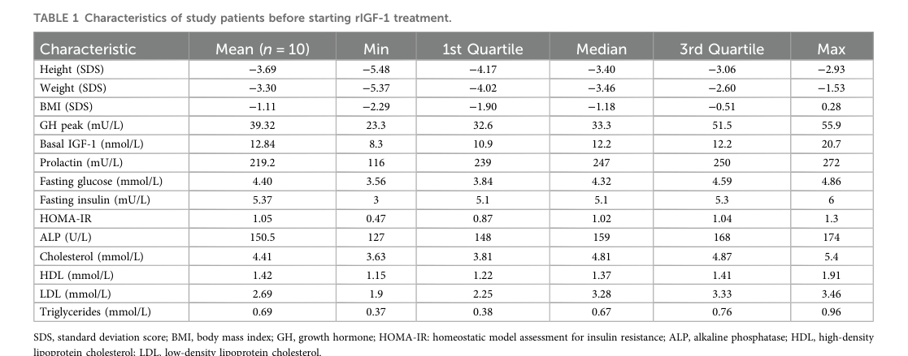

Growth delay due to insulin-like growth factor 1 (IGF1) deficiency is an autosomal recessive disorder caused by biallelic loss-of-function variants in IGF1. Bioinactive or absent IGF-1 fails to activate the type 1 IGF receptor (IGF1R), impairing IGF1R-driven growth signaling during fetal and postnatal development. Affected individuals present with severe intrauterine and postnatal growth restriction, microcephaly, sensorineural deafness, and intellectual disability. It is one cause within the broader clinical category of severe primary IGF-1 deficiency (SPIGFD), which is treated with recombinant human IGF-1 (mecasermin).
Ask a research question about IGF1 Deficiency. OpenScientist will conduct autonomous deep research using the Disorder Mechanisms Knowledge Base and PubMed literature (typically 10-30 minutes).
Do not include personal health information in your question. Questions and results are cached in your browser's local storage.
name: IGF1 Deficiency
creation_date: "2026-06-04T12:00:00Z"
category: Mendelian
description: >-
Growth delay due to insulin-like growth factor 1 (IGF1) deficiency is an
autosomal recessive disorder caused by biallelic loss-of-function variants in
IGF1. Bioinactive or absent IGF-1 fails to activate the type 1 IGF receptor
(IGF1R), impairing IGF1R-driven growth signaling during fetal and postnatal
development. Affected individuals present with severe intrauterine and
postnatal growth restriction, microcephaly, sensorineural deafness, and
intellectual disability. It is one cause within the broader clinical category
of severe primary IGF-1 deficiency (SPIGFD), which is treated with recombinant
human IGF-1 (mecasermin).
disease_term:
preferred_term: IGF1 deficiency
term:
id: MONDO:0012110
label: growth delay due to insulin-like growth factor type 1 deficiency
parents:
- growth hormone insensitivity syndrome
- hereditary disease
pathophysiology:
- name: IGF1 Loss of Function
description: >
Biallelic pathogenic variants in IGF1 (deletions, frameshifts, or missense
changes) abolish or severely reduce the amount or bioactivity of circulating
insulin-like growth factor 1. IGF-1 is produced predominantly by hepatocytes
under growth hormone control and is the principal effector of the GH-IGF1
growth axis. Loss-of-function variants reduce immunoreactive and bioactive
IGF-1, and some missense variants additionally impair the peptide's ability
to bind and activate its receptor.
gene:
preferred_term: IGF1
term:
id: hgnc:5464
label: IGF1
biological_processes:
- preferred_term: Regulation of growth
term:
id: GO:0040008
label: regulation of growth
modifier: DECREASED
cell_types:
- preferred_term: Hepatocyte (principal IGF-1 source)
term:
id: CL:0000182
label: hepatocyte
evidence:
- reference: PMID:23392101
reference_title: "Molecular IGF-1 and IGF-1 receptor defects: from genetics to clinical management."
supports: SUPPORT
evidence_source: HUMAN_CLINICAL
snippet: >-
Molecular defects of the insulin-like growth factor 1 gene (IGF1) are rare
in the human.
explanation: >-
Establishes biallelic IGF1 defects as the rare molecular cause of this
disorder.
- reference: PMID:36546343
reference_title: "Novel Insulin-Like Growth Factor 1 Gene Mutation: Broadening of the Phenotype and Implications for Insulin Resistance."
supports: SUPPORT
evidence_source: IN_VITRO
snippet: >-
The mutant IGF1 protein had a significantly reduced activity on in vitro
bioassays.
explanation: >-
Functional bioassay confirms that a homozygous IGF1 missense variant
reduces IGF-1 bioactivity, supporting loss of function as the mechanism.
downstream:
- target: Impaired IGF1R Growth Signaling
description: >-
Reduced IGF-1 amount or bioactivity fails to engage the type 1 IGF
receptor, lowering downstream receptor tyrosine kinase signaling.
- name: Impaired IGF1R Growth Signaling
description: >
IGF-1 normally binds and activates the type 1 IGF receptor (IGF1R), a
receptor tyrosine kinase that drives somatic growth and neurodevelopment.
In IGF1 deficiency, the loss of bioactive ligand reduces IGF1R
autophosphorylation and downstream signal transduction. Missense IGF1
variants have been shown to hamper IGF1R interaction and reduce receptor
phosphorylation, while frank loss-of-function alleles remove the ligand
entirely.
biological_processes:
- preferred_term: Insulin-like growth factor receptor signaling pathway
term:
id: GO:0048009
label: insulin-like growth factor receptor signaling pathway
modifier: DECREASED
- preferred_term: Cell surface receptor tyrosine kinase signaling
term:
id: GO:0007169
label: cell surface receptor protein tyrosine kinase signaling pathway
modifier: DECREASED
evidence:
- reference: PMID:36546343
reference_title: "Novel Insulin-Like Growth Factor 1 Gene Mutation: Broadening of the Phenotype and Implications for Insulin Resistance."
supports: SUPPORT
evidence_source: COMPUTATIONAL
snippet: >-
In silico analyses indicated the pathogenic potential of the variant with
electrostatic variations with the potential of hampering the interaction
with the IGF1R
explanation: >-
Demonstrates that a pathogenic IGF1 variant impairs interaction with
IGF1R, reducing receptor activation.
- reference: PMID:23392101
reference_title: "Molecular IGF-1 and IGF-1 receptor defects: from genetics to clinical management."
supports: SUPPORT
evidence_source: HUMAN_CLINICAL
snippet: >-
IGF-1 plays a key role in pre- and postnatal growth and development in
human.
explanation: >-
Confirms the central role of IGF-1/IGF1R signaling in human pre- and
postnatal growth, which is lost in IGF1 deficiency.
downstream:
- target: Impaired Somatic and Neural Growth
description: >-
Reduced IGF1R signaling compromises pre- and postnatal somatic growth,
brain growth, and cochlear development.
- name: Impaired Somatic and Neural Growth
description: >
Deficient IGF1R signaling during the fetal and postnatal period impairs
cellular proliferation and tissue growth across multiple organ systems.
Reduced growth signaling produces intrauterine and postnatal growth
restriction, deficient brain growth (microcephaly and developmental delay),
and abnormal cochlear development leading to sensorineural deafness. Mouse
models with disruption of Igf1 or Igf1r recapitulate severe prenatal growth
restriction, underscoring the essential growth-promoting role of this axis.
biological_processes:
- preferred_term: Regulation of growth
term:
id: GO:0040008
label: regulation of growth
modifier: DECREASED
cell_types:
- preferred_term: Neuron
term:
id: CL:0000540
label: neuron
evidence:
- reference: PMID:23392101
reference_title: "Molecular IGF-1 and IGF-1 receptor defects: from genetics to clinical management."
supports: SUPPORT
evidence_source: HUMAN_CLINICAL
snippet: >-
resulting in a variable degree of intrauterine and postnatal growth
retardation, microcephaly, developmental delay and deafness
explanation: >-
Directly links IGF1 deficiency to the core multisystem growth and
neurodevelopmental phenotype.
- reference: PMID:38952118
reference_title: "IGF1 Haploinsufficiency: Phenotype and Response to Growth Hormone Treatment in 9 Patients."
supports: SUPPORT
evidence_source: HUMAN_CLINICAL
snippet: >-
The clinical features of bi-allelic IGF1 defects are well established,
i.e., severe growth failure and microcephaly, delayed psychomotor
development, and sensorineural deafness.
explanation: >-
Summarizes the established multisystem phenotype resulting from impaired
IGF1-driven growth.
phenotypes:
- category: Phenotypic abnormality
name: Intrauterine growth restriction
description: >-
Severe prenatal growth failure is a consistent feature, with reported birth
length and head circumference markedly below the mean.
phenotype_term:
preferred_term: Intrauterine growth retardation
term:
id: HP:0001511
label: Intrauterine growth retardation
frequency: VERY_FREQUENT
evidence:
- reference: PMID:23392101
reference_title: "Molecular IGF-1 and IGF-1 receptor defects: from genetics to clinical management."
supports: SUPPORT
evidence_source: HUMAN_CLINICAL
snippet: >-
resulting in a variable degree of intrauterine and postnatal growth
retardation, microcephaly, developmental delay and deafness
explanation: >-
Lists intrauterine growth retardation among the core features of IGF1
mutations.
- category: Phenotypic abnormality
name: Postnatal growth failure
description: >-
Marked postnatal growth failure with severe short stature; reported
postnatal height SDS values fall far below normal range.
phenotype_term:
preferred_term: Postnatal growth retardation
term:
id: HP:0008897
label: Postnatal growth retardation
clinical_course: PROGRESSIVE
frequency: VERY_FREQUENT
evidence:
- reference: PMID:23392101
reference_title: "Molecular IGF-1 and IGF-1 receptor defects: from genetics to clinical management."
supports: SUPPORT
evidence_source: HUMAN_CLINICAL
snippet: >-
resulting in a variable degree of intrauterine and postnatal growth
retardation, microcephaly, developmental delay and deafness
explanation: >-
Lists postnatal growth retardation among the core features of IGF1
mutations.
- category: Phenotypic abnormality
name: Short stature
description: >-
Severe short stature, a defining feature of severe primary IGF-1 deficiency
(SPIGFD), the broader clinical category encompassing IGF1 deficiency.
phenotype_term:
preferred_term: Short stature
term:
id: HP:0004322
label: Short stature
frequency: VERY_FREQUENT
evidence:
- reference: PMID:37805563
reference_title: "Challenges in the care of individuals with severe primary insulin-like growth factor-I deficiency (SPIGFD): an international, multi-stakeholder perspective."
supports: SUPPORT
evidence_source: HUMAN_CLINICAL
snippet: >-
Severe primary insulin-like growth factor-I (IGF-I) deficiency (SPIGFD) is
a rare growth disorder characterized by short stature
explanation: >-
Defines short stature as a characterizing feature of SPIGFD, the clinical
category that includes IGF1 deficiency.
- category: Phenotypic abnormality
name: Microcephaly
description: >-
Severe microcephaly reflecting impaired prenatal and postnatal brain growth;
reported head circumference SDS values are markedly reduced.
phenotype_term:
preferred_term: Microcephaly
term:
id: HP:0000252
label: Microcephaly
frequency: VERY_FREQUENT
evidence:
- reference: PMID:23392101
reference_title: "Molecular IGF-1 and IGF-1 receptor defects: from genetics to clinical management."
supports: SUPPORT
evidence_source: HUMAN_CLINICAL
snippet: >-
resulting in a variable degree of intrauterine and postnatal growth
retardation, microcephaly, developmental delay and deafness
explanation: >-
Lists microcephaly among the core features of biallelic IGF1 mutations.
- category: Phenotypic abnormality
name: Sensorineural hearing impairment
description: >-
Sensorineural deafness is a characteristic feature, reflecting the role of
IGF-1 signaling in cochlear development.
phenotype_term:
preferred_term: Sensorineural hearing impairment
term:
id: HP:0000407
label: Sensorineural hearing impairment
frequency: FREQUENT
evidence:
- reference: PMID:38952118
reference_title: "IGF1 Haploinsufficiency: Phenotype and Response to Growth Hormone Treatment in 9 Patients."
supports: SUPPORT
evidence_source: HUMAN_CLINICAL
snippet: >-
The clinical features of bi-allelic IGF1 defects are well established,
i.e., severe growth failure and microcephaly, delayed psychomotor
development, and sensorineural deafness.
explanation: >-
Lists sensorineural deafness among the established features of biallelic
IGF1 defects.
- category: Phenotypic abnormality
name: Intellectual disability
description: >-
Cognitive impairment and developmental delay reflecting impaired
IGF-1-dependent brain development. Phenotype severity is variable.
phenotype_term:
preferred_term: Intellectual disability
term:
id: HP:0001249
label: Intellectual disability
frequency: FREQUENT
evidence:
- reference: PMID:36546343
reference_title: "Novel Insulin-Like Growth Factor 1 Gene Mutation: Broadening of the Phenotype and Implications for Insulin Resistance."
supports: SUPPORT
evidence_source: HUMAN_CLINICAL
snippet: >-
Phenotype can be heterogenous with varying degrees of neurosensory
deafness, cognitive defects, glucose metabolism impairment and short
stature.
explanation: >-
Documents cognitive defects as part of the heterogeneous IGF1-mutation
phenotype.
- category: Phenotypic abnormality
name: Global developmental delay
description: >-
Delayed psychomotor and developmental milestones are repeatedly described in
affected individuals.
phenotype_term:
preferred_term: Global developmental delay
term:
id: HP:0001263
label: Global developmental delay
frequency: FREQUENT
evidence:
- reference: PMID:23392101
reference_title: "Molecular IGF-1 and IGF-1 receptor defects: from genetics to clinical management."
supports: SUPPORT
evidence_source: HUMAN_CLINICAL
snippet: >-
resulting in a variable degree of intrauterine and postnatal growth
retardation, microcephaly, developmental delay and deafness
explanation: >-
Lists developmental delay among the core features of biallelic IGF1
mutations.
- category: Laboratory abnormality
name: Insulin resistance
description: >-
Some IGF1-mutation cases display insulin resistance, hypothesized to arise
from altered insulin receptor signaling by mutant IGF-1. This is a variable,
not obligate, feature.
phenotype_term:
preferred_term: Insulin resistance
term:
id: HP:0000855
label: Insulin resistance
frequency: OCCASIONAL
evidence:
- reference: PMID:36546343
reference_title: "Novel Insulin-Like Growth Factor 1 Gene Mutation: Broadening of the Phenotype and Implications for Insulin Resistance."
supports: SUPPORT
evidence_source: HUMAN_CLINICAL
snippet: >-
This study describes a 12.6-year-old girl presenting with severe short
stature and insulin resistance
explanation: >-
Documents insulin resistance in a patient with a homozygous IGF1 missense
variant.
genetic:
- name: IGF1 pathogenic variants
gene_term:
preferred_term: IGF1
term:
id: hgnc:5464
label: IGF1
association: Causative biallelic loss-of-function variants
relationship_type: CAUSATIVE
variant_origin: GERMLINE
evidence:
- reference: PMID:23392101
reference_title: "Molecular IGF-1 and IGF-1 receptor defects: from genetics to clinical management."
supports: SUPPORT
evidence_source: HUMAN_CLINICAL
snippet: >-
Molecular defects of the insulin-like growth factor 1 gene (IGF1) are rare
in the human.
explanation: >-
Establishes IGF1 as the causative gene for this disorder.
inheritance:
- name: Autosomal recessive inheritance
inheritance_term:
preferred_term: Autosomal recessive inheritance
term:
id: HP:0000007
label: Autosomal recessive inheritance
evidence:
- reference: PMID:23392101
reference_title: "Molecular IGF-1 and IGF-1 receptor defects: from genetics to clinical management."
supports: SUPPORT
evidence_source: HUMAN_CLINICAL
snippet: >-
Only three homozygous and two families with heterozygous mutations of
the IGF1 gene have been described
explanation: >-
Homozygous (biallelic) IGF1 mutations cause the severe recessive
phenotype; heterozygotes are more mildly affected.
variants:
- name: Biallelic IGF1 loss-of-function variants
description: >
Reported disease-causing IGF1 variants include exon deletions, frameshift
variants producing premature stop codons, and missense variants that
reduce receptor binding and bioactivity. A homozygous missense variant
(c.247A>T; p.Ser83Cys) was shown to severely reduce IGF-1 bioactivity.
gene:
preferred_term: IGF1
term:
id: hgnc:5464
label: IGF1
clinical_significance: PATHOGENIC
type: loss_of_function_variant
evidence:
- reference: PMID:36546343
reference_title: "Novel Insulin-Like Growth Factor 1 Gene Mutation: Broadening of the Phenotype and Implications for Insulin Resistance."
supports: SUPPORT
evidence_source: HUMAN_CLINICAL
snippet: >-
WES revealed a novel homozygous IGF1 missense variant (c.247A>T),
causing a change of serine 83 for cysteine
explanation: >-
Identifies a specific homozygous pathogenic IGF1 missense variant in an
affected individual.
inheritance:
- name: Autosomal Recessive
inheritance_term:
preferred_term: Autosomal recessive inheritance
term:
id: HP:0000007
label: Autosomal recessive inheritance
evidence:
- reference: PMID:23392101
reference_title: "Molecular IGF-1 and IGF-1 receptor defects: from genetics to clinical management."
supports: SUPPORT
evidence_source: HUMAN_CLINICAL
snippet: >-
Only three homozygous and two families with heterozygous mutations of the
IGF1 gene have been described
explanation: >-
The severe disorder follows biallelic (autosomal recessive) inheritance;
heterozygotes show a milder gene-dose phenotype.
treatments:
- name: Recombinant Human IGF-1 (Mecasermin)
description: >-
Recombinant human IGF-1 (rhIGF-1; mecasermin, Increlex) provides exogenous
IGF-1 to replace the deficient or bioinactive endogenous peptide and is the
only disease-specific therapy for severe primary IGF-1 deficiency (SPIGFD).
It improves growth velocity, especially in the first years of treatment.
Hypoglycemia is a common adverse effect, requiring administration with food
and blood glucose monitoring.
therapeutic_modality: PROTEIN_REPLACEMENT
target_mechanisms:
- target: IGF1 Loss of Function
treatment_effect: BYPASSES
description: >-
Mecasermin supplies exogenous recombinant IGF-1, bypassing the deficient
or bioinactive endogenous peptide to restore downstream IGF1R growth
signaling.
evidence:
- reference: PMID:19707272
reference_title: "Profile of mecasermin for the long-term treatment of growth failure in children and adolescents with severe primary IGF-1 deficiency."
supports: SUPPORT
evidence_source: HUMAN_CLINICAL
snippet: >-
The only treatment is recombinant IGF-1 (mecasermin)
explanation: >-
Recombinant IGF-1 replacement directly addresses the IGF1 loss-of-function
node by providing the missing peptide.
treatment_term:
preferred_term: Pharmacotherapy
term:
id: NCIT:C15986
label: Pharmacotherapy
therapeutic_agent:
- preferred_term: mecasermin
term:
id: NCIT:C2262
label: Mecasermin
evidence:
- reference: PMID:19707272
reference_title: "Profile of mecasermin for the long-term treatment of growth failure in children and adolescents with severe primary IGF-1 deficiency."
supports: SUPPORT
evidence_source: HUMAN_CLINICAL
snippet: >-
The only treatment is recombinant IGF-1 (mecasermin)
explanation: >-
Establishes recombinant IGF-1 (mecasermin) as the disease-specific
replacement therapy for IGF-1 deficiency.
- reference: PMID:39529965
reference_title: "Clinical characteristics and treatment efficacy in patients with primary severe IGF-1 deficiency treated with recombinant IGF-1."
supports: SUPPORT
evidence_source: HUMAN_CLINICAL
snippet: >-
The study showed that treatment with rhIGF-1 positively affects growth
rate, especially in the first years of treatment.
explanation: >-
Real-world cohort showing growth benefit of mecasermin in severe primary
IGF-1 deficiency.
- reference: PMID:39529965
reference_title: "Clinical characteristics and treatment efficacy in patients with primary severe IGF-1 deficiency treated with recombinant IGF-1."
supports: SUPPORT
evidence_source: HUMAN_CLINICAL
snippet: >-
Side effects occurred in 50% of patients, with 40% of patients treated
with rhIGF-1 experiencing hypoglycemia during treatment.
explanation: >-
Documents hypoglycemia as the principal adverse effect requiring
monitoring during mecasermin therapy.
- reference: PMID:35250870
reference_title: "Pubertal Timing and Growth Dynamics in Children With Severe Primary IGF-1 Deficiency: Results From the European Increlex(R) Growth Forum Database Registry."
supports: SUPPORT
evidence_source: HUMAN_CLINICAL
snippet: >-
Children and adolescents treated with rhIGF-1 for SPIGFD with growth
failure experienced an increase in height SDS in prepubertal years
compared with baseline.
explanation: >-
Registry data supporting sustained height gain with rhIGF-1 treatment.
- name: Growth Hormone Therapy
description: >-
Recombinant human growth hormone (rhGH) has limited, variable benefit in
biallelic IGF1 deficiency because the defect lies downstream of GH; growth
responses are typically poor to modest. rhGH may be more useful in IGF1
haploinsufficiency, where some residual IGF-1 production remains.
therapeutic_modality: PROTEIN_REPLACEMENT
treatment_term:
preferred_term: human growth hormone replacement therapy
term:
id: MAXO:0000780
label: human growth hormone replacement therapy
evidence:
- reference: PMID:23392101
reference_title: "Molecular IGF-1 and IGF-1 receptor defects: from genetics to clinical management."
supports: PARTIAL
evidence_source: HUMAN_CLINICAL
snippet: >-
Data on GH treatment in these children are limited, showing a poor to
modest growth response.
explanation: >-
Documents the limited efficacy of GH therapy in IGF1/IGF1R defects, where
the lesion is downstream of GH.
- name: Genetic Counseling
description: >-
Genetic counseling for affected families addresses the autosomal recessive
recurrence risk and carrier status, particularly relevant given reports of
consanguinity in homozygous cases.
treatment_term:
preferred_term: genetic counseling
term:
id: MAXO:0000079
label: genetic counseling
evidence:
- reference: PMID:23392101
reference_title: "Molecular IGF-1 and IGF-1 receptor defects: from genetics to clinical management."
supports: SUPPORT
evidence_source: HUMAN_CLINICAL
snippet: >-
Only three homozygous and two families with heterozygous mutations of the
IGF1 gene have been described
explanation: >-
The recessive inheritance and familial clustering underpin the value of
genetic counseling for at-risk families.
clinical_trials:
- name: NCT00903110
status: RECRUITING
description: >-
European Increlex Growth Forum Database (Eu-IGFD) Registry: a global patient
registry monitoring the long-term safety and effectiveness of recombinant
human IGF-1 (mecasermin/Increlex) in children and adolescents with severe
primary IGF-1 deficiency.
target_phenotypes:
- preferred_term: Short stature
term:
id: HP:0004322
label: Short stature
evidence:
- reference: PMID:35250870
reference_title: "Pubertal Timing and Growth Dynamics in Children With Severe Primary IGF-1 Deficiency: Results From the European Increlex(R) Growth Forum Database Registry."
supports: SUPPORT
evidence_source: HUMAN_CLINICAL
snippet: >-
Pubertal growth outcomes were extracted from the European Increlex® Growth
Forum Database (Eu-IGFD) Registry (NCT00903110).
explanation: >-
Identifies the Eu-IGFD registry (NCT00903110) as the real-world data
source for rhIGF-1 outcomes in SPIGFD.
notes: >-
IGF1 deficiency sits within the broader clinical category of severe primary
IGF-1 deficiency (SPIGFD), which also includes growth hormone receptor (GHR)
defects (Laron syndrome) and other GH-IGF axis gene defects. No GeneReviews
chapter specific to IGF1 deficiency was found (searched 2026-06).
datasets: []
Target disease: IGF1 Deficiency (Mendelian; most classically due to biallelic loss-of-function variants in IGF1) (walenkamp2013molecularigf1and pages 2-4, giacomozzi2023novelinsulinlikegrowth pages 1-2)
Scope note (terminology): In the recent clinical literature, “IGF1 deficiency” (IGF1 gene defects) is closely related to—yet not identical with—severe primary IGF-1 deficiency (SPIGFD)/severe primary IGF-I deficiency and growth hormone insensitivity (GHI)/Laron syndrome (which are defined clinically by low IGF-I despite normal/high GH and can be caused by several GH–IGF axis genes) (backeljauw2023challengesinthe pages 1-3, cappa2009profileofmecasermin pages 1-2, denaite2024clinicalcharacteristicsand pages 1-2). This report therefore covers (1) biallelic IGF1 loss-of-function as a Mendelian disease and (2) the broader, treatment-relevant SPIGFD umbrella as used in registries and practice.
Biallelic (autosomal-recessive) IGF1 loss-of-function is a very rare cause of extreme pre- and postnatal growth failure, severe microcephaly, and variable neurodevelopmental impairment and sensorineural deafness, with biochemical findings that can include very low/undetectable IGF-I but can also be assay-dependent and paradoxical in some variants (walenkamp2013molecularigf1and pages 2-4, giacomozzi2023novelinsulinlikegrowth pages 1-2). In practice, many patients are identified and treated under the clinical category SPIGFD, defined by severe short stature and low IGF-I with normal/elevated GH; the only disease-specific replacement therapy currently emphasized is recombinant human IGF-1 (rhIGF-1; mecasermin, Increlex®) (backeljauw2023challengesinthe pages 1-3, denaite2024clinicalcharacteristicsand pages 1-2). Recent (2023–2024) developments include a multi-stakeholder consensus-style perspective highlighting diagnostic inequities and access barriers (backeljauw2023challengesinthe pages 1-3, backeljauw2023challengesinthe pages 5-7), a 2024 real-world retrospective mecasermin outcomes report (denaite2024clinicalcharacteristicsand pages 1-2), and a 2024 LC–MS clinical laboratory study showing that heterozygous IGF1 variants can cause systematic under-quantification of total IGF-1 and misclassification against reference ranges if not accounted for (motorykin2024detectionrateof pages 6-8, motorykin2024detectionrateof pages 1-2).
Mendelian IGF1 deficiency is classically caused by biallelic IGF1 loss-of-function and presents with a constellation of severe prenatal growth restriction (IUGR), marked postnatal growth failure, microcephaly, and often neurodevelopmental delay and sensorineural hearing loss (walenkamp2013molecularigf1and pages 2-4, giacomozzi2023novelinsulinlikegrowth pages 1-2).
SPIGFD is a related clinical/endocrine entity defined by severe short stature and low IGF-I in the setting of normal/elevated GH, and includes Laron syndrome (GHR defects) and other GH–IGF axis causes (backeljauw2023challengesinthe pages 1-3).
Not fully retrievable in this run: OMIM/Orphanet/ICD/MeSH/MONDO identifiers were not available from the retrieved full-text sources and the current toolset did not include direct OMIM/Orphanet lookups.
Trial/registry identifier (highly relevant): The major real‑world data source for rhIGF‑1 (mecasermin) is the Eu‑IGFD registry / Increlex® Growth Forum Database, registered at ClinicalTrials.gov NCT00903110 (Global patient registry; first posted 2008; still active per record versioning) (NCT00903110 chunk 3).
Evidence in this report is primarily aggregated disease-level resources (registry analyses and reviews) plus human case reports/case series for biallelic IGF1 defects and single-center retrospective cohorts for mecasermin treatment (walenkamp2013molecularigf1and pages 2-4, denaite2024clinicalcharacteristicsand pages 1-2, bang2022pubertaltimingand pages 1-2, backeljauw2023challengesinthe pages 1-3).
Genetic (Mendelian): Biallelic IGF1 pathogenic variants are a very rare cause of growth failure; one review noted that “Only three homozygous and two families with heterozygous mutations of the IGF1 gene have been described” (as of 2013) (walenkamp2013molecularigf1and pages 1-2). A 2023 report reiterates that IGF1 mutations are “extremely rare causes” of pre- and post-natal growth retardation and can include hearing, cognition, and glucose metabolism phenotypes (giacomozzi2023novelinsulinlikegrowth pages 1-2).
Broader SPIGFD umbrella: SPIGFD can result from defects across the GH–IGF axis (e.g., GHR, STAT5B, IGF1, ALS/IGFALS) (backeljauw2023challengesinthe pages 1-3, cappa2009profileofmecasermin pages 2-3).
For Mendelian IGF1 deficiency, the principal risk factor is parental carrier status for pathogenic IGF1 alleles; reported homozygous cases often come from consanguineous families (walenkamp2013molecularigf1and pages 2-4, cappa2009profileofmecasermin pages 1-2).
No robust protective environmental factors were identified in the retrieved sources. A key practical “protective” factor against misdiagnosis is appropriate assay interpretation, including attention to IGF‑1 variants that confound measurement (see Diagnostics) (motorykin2024detectionrateof pages 6-8, motorykin2024detectionrateof pages 1-2).
Growth and cranial growth (quantitative): Reported homozygous IGF1-defect cases show extreme deviations. A review summarizing published patients reports approximate ranges: - Birth weight: ~ −2.4 to −4.0 SDS - Birth length: ~ −3.7 to −6.5 SDS - Birth head circumference: ~ −2.5 to −7.5 SDS - Postnatal height: ~ −4.9 to −8.5 SDS - Postnatal head circumference: ~ −4.0 to −8.0 SDS (walenkamp2013molecularigf1and pages 2-4)
Neurodevelopment/sensory: Developmental delay and sensorineural deafness are repeatedly described as key features (walenkamp2013molecularigf1and pages 1-2, giacomozzi2023novelinsulinlikegrowth pages 1-2).
Metabolic: Some cases show insulin sensitivity abnormalities; a 2023 report highlights a phenotype including insulin resistance in a homozygous IGF1 missense variant case and hypothesizes altered insulin receptor signaling (giacomozzi2023novelinsulinlikegrowth pages 1-2).
A multi-stakeholder 2023 perspective highlights that SPIGFD affects more than stature, listing non-growth features that may include hypoglycemia, dyslipidemia, insulin resistance, delayed puberty, hearing impairment, and immunodeficiency (contextualized as key clinical characteristics and care burden) (backeljauw2023challengesinthe pages 7-8).
The following are suggested mappings based on the phenotype descriptions above (not directly asserted by the cited papers as HPO IDs): - Short stature (HP:0004322) - Intrauterine growth restriction (HP:0001511) - Postnatal growth failure (HP:0008897) - Microcephaly (HP:0000252) - Global developmental delay (HP:0001263) - Sensorineural hearing impairment (HP:0000407) - Hypoglycemia (HP:0001943) - Insulin resistance (HP:0000855)
The 2023 multi-stakeholder perspective emphasizes “considerable impact on the physical health and quality of life for patients” and underscores unmet needs beyond height (backeljauw2023challengesinthe pages 1-3).
Biallelic IGF1 defects include deletions/frameshifts leading to truncation or absent functional peptide and missense variants that reduce IGF1R binding/signaling (walenkamp2013molecularigf1and pages 2-4, giacomozzi2023novelinsulinlikegrowth pages 1-2). A 2013 review lists examples including exon deletions and missense variants (e.g., Val→Met; Arg→Gln) and frameshift variants (walenkamp2013molecularigf1and pages 2-4).
Functional consequences: Severe reduction in receptor binding has been measured for some mutants (e.g., up to ~90-fold reduced binding in one reported mutant) and diminished IGF1R phosphorylation/signaling (walenkamp2013molecularigf1and pages 2-4, giacomozzi2023novelinsulinlikegrowth pages 1-2).
Biallelic IGF1 loss-of-function is autosomal recessive, with gene-dose effects described in heterozygous relatives (milder growth impacts) (walenkamp2013molecularigf1and pages 2-4).
No IGF1-deficiency-specific epigenetic mechanisms or recurrent chromosomal abnormalities were identified in the retrieved evidence.
No specific toxins, lifestyle factors, or infectious triggers were identified as causal for the Mendelian form in the retrieved evidence; SPIGFD is primarily a genetic/endocrine disorder (backeljauw2023challengesinthe pages 1-3).
1) Upstream trigger: Pathogenic variants in IGF1 (or other GH–IGF axis genes in SPIGFD) reduce the amount or bioactivity of IGF‑1 (walenkamp2013molecularigf1and pages 2-4, backeljauw2023challengesinthe pages 1-3). 2) Molecular consequence: Reduced IGF‑1 bioactivity leads to reduced IGF1R activation (receptor binding and phosphorylation defects have been measured for multiple IGF‑1 mutants) (walenkamp2013molecularigf1and pages 2-4, giacomozzi2023novelinsulinlikegrowth pages 1-2). 3) Cellular/tissue consequence: Impaired IGF1 signaling compromises fetal and postnatal somatic growth and brain development; animal models strongly support prenatal requirement for IGF‑1/IGF1R (IGF1 null mice ~65% birth weight; IGF1R null ~55% and perinatal lethality) (walenkamp2013molecularigf1and pages 1-2). 4) Clinical phenotype: IUGR → severe short stature; microcephaly; neurodevelopmental deficits; sensorineural deafness; possible metabolic complications (walenkamp2013molecularigf1and pages 2-4, giacomozzi2023novelinsulinlikegrowth pages 1-2).
Based on the GH–IGF axis and IGF1R signaling described in the sources, the primary downstream pathways likely involve PI3K–AKT and MAPK signaling downstream of IGF1R (not explicitly detailed in the retrieved excerpts). The direct mechanistic evidence in this run is primarily at the level of IGF1R binding/phosphorylation defects (walenkamp2013molecularigf1and pages 2-4, giacomozzi2023novelinsulinlikegrowth pages 1-2).
Typically prenatal/congenital, with IUGR evident at birth and severe postnatal growth failure thereafter (giacomozzi2023novelinsulinlikegrowth pages 1-2, walenkamp2013molecularigf1and pages 2-4).
Growth failure is chronic and persistent. Puberty in SPIGFD is described as delayed in untreated patients; registry-treated patients show delayed pubertal timing but maintained pubertal height SDS gain (bang2022pubertaltimingand pages 1-2).
The 2023 multi-stakeholder perspective cites that in the EU about ~2 per 10,000 have “primary IGF‑I deficiencies (PIGFD)” and that SPIGFD is a smaller subset; in one French cohort ~0.8–1.2% of children referred for slow statural growth were diagnosed with SPIGFD (backeljauw2023challengesinthe pages 1-3).
A 2024 clinical LC–MS study screening 243,808 patients detected IGF‑1 variants in 1,099 patients (0.45%) (motorykin2024detectionrateof pages 1-2). This is not disease prevalence, but it is a clinically important statistic for interpretation of IGF‑1 testing.
The 2023 multi-stakeholder perspective provides the commonly used definition (quoted from its abstract): “Severe primary insulin-like growth factor-I (IGF-I) deficiency (SPIGFD) is a rare growth disorder characterized by short stature (standard deviation score [SDS] ≤ 3.0), low circulating concentrations of IGF-I (SDS ≤ 3.0), and normal or elevated concentrations of growth hormone (GH).” (published Oct 2023; https://doi.org/10.1186/s13023-023-02928-7) (backeljauw2023challengesinthe pages 1-3).
A 2024 real-world cohort used a slightly different operational definition: height < −3.0 SD and IGF‑1 below the 2.5th percentile (or < −2 SD), with stimulated GH peak ≥10 ng/mL; and used an IGF‑1 generation test with <50% IGF‑1 rise to confirm severe PIGFD (published Oct 28 2024; https://doi.org/10.3389/fped.2024.1461163) (denaite2024clinicalcharacteristicsand pages 1-2).
A 2009 review describes use of an IGF‑1 generation test (short rhGH course) as a supportive functional test for GH insensitivity/primary IGF‑1 deficiency, with controversies around cutoffs and assay variability (cappa2009profileofmecasermin pages 2-3).
A 2023 perspective describes common first-line sequencing of GHR and other GH–IGF axis genes, while also emphasizing that genetic testing is limited by access/cost in many regions and that a genetic diagnosis may not be required for rhIGF‑1 treatment eligibility in some jurisdictions (backeljauw2023challengesinthe pages 5-7).
Motorykin et al. (Oct 2024; https://doi.org/10.1515/cclm-2023-0709) show that heterozygous IGF‑1 variants are frequent enough in clinical testing to matter for interpretation. In 243,808 patients, variants were found in 0.45% (motorykin2024detectionrateof pages 1-2). Critically, the study reports that in LC‑MS reports for heterozygous variants, the measured concentration may account for only the wild-type peptide; the authors note that for heterozygous individuals “only half of the total IGF‑1 is quantified” (motorykin2024detectionrateof pages 6-8, motorykin2024detectionrateof pages 1-2). They estimate 280/1,086 (25.8%) variant-positive patients could be miscategorized as outside the reference range if variant contribution is ignored (motorykin2024detectionrateof pages 6-8).
Implication: Apparent “low IGF‑1” in a patient with a heterozygous IGF1 variant may reflect measurement underestimation, potentially confounding evaluation for IGF‑1 deficiency or GH axis disorders (motorykin2024detectionrateof pages 6-8, motorykin2024detectionrateof pages 1-2).
Within short stature workups, SPIGFD may be confused with other syndromic short stature conditions; the 2023 perspective notes misdiagnosis with syndromes such as Noonan (backeljauw2023challengesinthe pages 7-8).
Long-term outcomes vary by genotype, residual signaling, and treatment timing. Registry data suggest improved height SDS with rhIGF‑1 treatment across childhood and puberty (bang2022pubertaltimingand pages 1-2). Earlier initiation is associated with better first-year growth response (backeljauw2023challengesinthe pages 5-7).
The 2023 perspective states that “Recombinant human IGF‑1 (rhIGF‑1) is currently the only effective therapy for SPIGFD” (https://doi.org/10.1186/s13023-023-02928-7; Oct 2023) (backeljauw2023challengesinthe pages 1-3).
Real-world implementation / registries: Long-term safety and effectiveness are monitored via the Eu‑IGFD Registry (ClinicalTrials.gov NCT00903110) (NCT00903110 chunk 3).
Growth outcomes (registry and cohorts): - Registry-derived first-year height velocity ~7.3 cm/year (95% CI 6.8–7.7; n=81) in treatment-naïve prepubertal patients; earlier initiation predicted better response (Oct 2023 perspective summarizing registry data) (backeljauw2023challengesinthe pages 5-7). - Puberty/growth dynamics from the Eu‑IGFD registry (Frontiers in Endocrinology, Feb 2022; https://doi.org/10.3389/fendo.2022.812568): among those reaching end of puberty, mean height SDS increased from −3.7 to −2.6 (boys) and −3.1 to −2.3 (girls) (bang2022pubertaltimingand pages 1-2). - Single-center 2024 retrospective cohort (Frontiers in Pediatrics; Oct 28 2024): mean change in height SDS from start to end of treatment 0.76 ± 0.64, with hypoglycemia reported in 40% (denaite2024clinicalcharacteristicsand pages 1-2).
Adverse events (hypoglycemia emphasized): - 2024 cohort: “Side effects occurred in 50% of patients, with 40% of patients treated with rhIGF‑1 experiencing hypoglycemia” (denaite2024clinicalcharacteristicsand pages 1-2). - 2023 perspective reports aggregated hypoglycemia AE frequencies: 49% in clinical trials vs 28% in post-marketing data (backeljauw2023challengesinthe pages 7-8).
MAXO terms (suggested mapping): recombinant human insulin-like growth factor 1 therapy; blood glucose monitoring.
In biallelic IGF1 deficiency, rhGH responses are variable and depend on the molecular defect; classical cases may show limited response, while some partial functional defects may benefit (giacomozzi2023novelinsulinlikegrowth pages 1-2). A 2013 review notes limited GH treatment data with poor-to-modest response, but also describes catch-up growth with high-dose GH in one report (0.4 mg/kg/week) (walenkamp2013molecularigf1and pages 2-4, walenkamp2013molecularigf1and pages 1-2).
Primary prevention is not established for Mendelian IGF1 deficiency. Practical prevention focuses on: - Genetic counseling for at-risk families (autosomal recessive inheritance) (walenkamp2013molecularigf1and pages 2-4). - Early detection and early treatment initiation in SPIGFD to optimize growth response (earlier initiation predictor) (backeljauw2023challengesinthe pages 5-7).
No naturally occurring veterinary syndrome was identified in the retrieved evidence. However, comparative biology is central to the pathway: - IGF1 knockout mice have ~65% of normal birth weight and most die soon after birth; IGF1R knockout mice have ~55% of normal birth weight and die within hours (walenkamp2013molecularigf1and pages 1-2).
Mouse genetic models (IGF1−/−; IGF1R−/−) demonstrate the critical prenatal role of IGF signaling and recapitulate severe growth restriction and perinatal lethality in the most severe disruptions (walenkamp2013molecularigf1and pages 1-2). These models strongly support causality but may overrepresent lethality compared with human hypomorphic alleles.
| Disease entity / label | Scope / relationship | Key diagnostic criteria / definition | Key notes | Sources |
|---|---|---|---|---|
| IGF1 deficiency | Broad Mendelian disorder caused by pathogenic IGF1 variants; typically refers to biallelic loss-of-function with severe prenatal and postnatal growth failure | No single universal cutoff in the extracted sources; human cases are characterized by very low/undetectable or assay-variable IGF-1, often normal-to-elevated GH, with severe growth failure, microcephaly, developmental delay, and deafness (walenkamp2013molecularigf1and pages 2-4, giacomozzi2023novelinsulinlikegrowth pages 1-2) | Reported pathogenic mechanisms include truncating deletions/frameshifts and missense variants that reduce IGF1R binding/signaling; reported variants include exon 4–5 deletion, Val92Met, Arg84Gln, Asn74Argfs*9, Ser83Glnfs*13 (walenkamp2013molecularigf1and pages 1-2, walenkamp2013molecularigf1and pages 2-4) | (walenkamp2013molecularigf1and pages 1-2, walenkamp2013molecularigf1and pages 2-4, giacomozzi2023novelinsulinlikegrowth pages 1-2) |
| Primary IGF-1 deficiency (PIGFD/IGFD) | Umbrella clinical/endocrine category for disorders with inadequate IGF-1 production/action despite adequate GH; includes congenital/Mendelian GH insensitivity states and related axis defects | Typical pattern: low IGF-1 with normal or high GH; older review notes FDA/EMEA indications centered on severe short stature and low IGF-1 with normal/elevated GH (cappa2009profileofmecasermin pages 2-3) | Genetic causes mentioned include GHR, STAT5B, IGF1, and ALS/IGFALS; can overlap with “GH insensitivity” and “Laron syndrome” terminology (cappa2009profileofmecasermin pages 2-3, cappa2009profileofmecasermin pages 1-2) | (cappa2009profileofmecasermin pages 2-3, cappa2009profileofmecasermin pages 1-2) |
| Severe primary IGF-1 deficiency (SPIGFD) | Narrower treatment-relevant subset of primary IGF-1 deficiency used in modern care frameworks and registries | Short stature SDS ≤ -3.0, IGF-I SDS ≤ -3.0, and normal or elevated GH; this is the definition used in the 2023 international multi-stakeholder perspective (backeljauw2023challengesinthe pages 1-3) | Best-characterized form is Laron syndrome due to GHR defects; SPIGFD is a subset of primary IGF-1 deficiencies and diagnosis/treatment access remain challenging (backeljauw2023challengesinthe pages 1-3) | (backeljauw2023challengesinthe pages 1-3) |
| PSIGFD / severe primary IGF-1 deficiency (single-center 2024 study definition) | Operational clinical definition used in a 2024 retrospective mecasermin cohort | Height < -3.0 SD for age/sex, IGF-1 below the 2.5th percentile or < -2 SD, and normal GH with GH peak ≥10 ng/mL on stimulation; IGF-1 generation test after 4-day rhGH with <50% rise in IGF-1 used to confirm SPIGFD (denaite2024clinicalcharacteristicsand pages 1-2) | Illustrates real-world variation from the stricter IGF-I SDS ≤ -3.0 definition used elsewhere; useful for understanding why eligibility/diagnosis may differ across centers or jurisdictions (denaite2024clinicalcharacteristicsand pages 1-2, backeljauw2023challengesinthe pages 5-7) | (denaite2024clinicalcharacteristicsand pages 1-2, backeljauw2023challengesinthe pages 5-7) |
| Growth hormone insensitivity (GHI) / Laron syndrome | Syndromic/etiologic subset within primary IGF-1 deficiency; classic Mendelian GH resistance state | Clinical pattern of low IGF-1 despite normal/high GH; older review cites FDA/EMEA treatment indications of height SDS ≤ -3, basal IGF-1 SDS ≤ -3, and normal/elevated GH (cappa2009profileofmecasermin pages 2-3) | Most commonly due to GHR mutations; older review states >250 reported GHR defects and notes consanguinity in many families; mecasermin is the only specific replacement therapy discussed (cappa2009profileofmecasermin pages 1-2, cappa2009profileofmecasermin pages 2-3) | (cappa2009profileofmecasermin pages 2-3, cappa2009profileofmecasermin pages 1-2) |
| IGF1 haploinsufficiency | Heterozygous IGF1 loss; related but usually milder than classic biallelic IGF1 deficiency | Not defined by fixed biochemical cutoffs in the extracted evidence; phenotype includes prenatal/postnatal growth failure, microcephaly, feeding difficulties, low/low-normal serum IGF-I with relatively preserved IGFBP-3 (punt2025igf1haploinsufficiencyphenotype pages 2-3, punt2025igf1haploinsufficiencyphenotype pages 1-1) | Reported molecular lesions include whole/partial gene deletions and a frameshift (c.243_246dupCAGC; p.Ser83Glnfs*13); important differential within monogenic short stature rather than classic SPIGFD (punt2025igf1haploinsufficiencyphenotype pages 2-3, punt2025igf1haploinsufficiencyphenotype pages 1-1) | (punt2025igf1haploinsufficiencyphenotype pages 2-3, punt2025igf1haploinsufficiencyphenotype pages 1-1) |
| Diagnostic variability across regions / assays | Cross-cutting issue affecting classification of SPIGFD/PSIGFD | US-style threshold cited as basal IGF-I SDS ≤ -3.0, while EU criteria may use <2.5th percentile; assay recommendations exist but uptake is limited, creating inter-assay and inter-region variability (backeljauw2023challengesinthe pages 5-7) | IGF-I generation test may support diagnosis but is often inconclusive in non-classic cases; lack of normative IGF-I SDS/percentile data complicates biochemical diagnosis (backeljauw2023challengesinthe pages 5-7) | (backeljauw2023challengesinthe pages 5-7) |
| IGF-1 LC-MS variant/assay interpretation issue | Laboratory interpretation issue relevant to diagnosing apparent low IGF-1 in some patients | Not a disease definition, but clinically important because heterozygous IGF1 variants can cause reported LC-MS IGF-1 to represent only the wild-type peptide, effectively underestimating total circulating IGF-1 (motorykin2024detectionrateof pages 1-2, motorykin2024detectionrateof pages 8-9) | In 243,808 patients, variants were detected in 1,099 (0.45%); 25.8% of variant-positive patients could be miscategorized relative to the reference range if variant contribution is ignored (motorykin2024detectionrateof pages 6-8, motorykin2024detectionrateof pages 1-2) | (motorykin2024detectionrateof pages 6-8, motorykin2024detectionrateof pages 1-2, motorykin2024detectionrateof pages 8-9) |
Table: This table compares the main disease labels used around Mendelian IGF1 deficiency and severe primary IGF-1 deficiency, emphasizing how definitions and cutoffs vary across sources. It is useful for reconciling nomenclature, eligibility criteria, and assay-related diagnostic caveats.
1) International multi-stakeholder perspective (Oct 2023): formalizes current SPIGFD definition and highlights diagnostic variability, inequitable access to therapy, and the need to characterize disease burden beyond height (https://doi.org/10.1186/s13023-023-02928-7) (backeljauw2023challengesinthe pages 1-3, backeljauw2023challengesinthe pages 5-7). 2) Novel homozygous IGF1 missense variant with insulin resistance (Dec 2023): expands phenotypic spectrum, highlights bioassays and in silico receptor interaction hypotheses (https://doi.org/10.1210/clinem/dgac738) (giacomozzi2023novelinsulinlikegrowth pages 1-2). 3) LC–MS diagnostic confounding by IGF‑1 variants (Oct 2024): large cohort shows variant detection rate 0.45% and quantification pitfalls that can shift z-scores and reference-range categorization (https://doi.org/10.1515/cclm-2023-0709) (motorykin2024detectionrateof pages 6-8, motorykin2024detectionrateof pages 1-2). 4) Real-world mecasermin cohort outcomes (Oct 2024): documents growth gains and frequent hypoglycemia, reinforcing the need for monitoring (https://doi.org/10.3389/fped.2024.1461163) (denaite2024clinicalcharacteristicsand pages 1-2).
Baseline cohort characteristics for a 2024 mecasermin-treated PSIGFD cohort are summarized in the paper’s Table 1 (cropped extraction) (denaite2024clinicalcharacteristicsand media c5b349d8).
References
(walenkamp2013molecularigf1and pages 2-4): M.J.E. Walenkamp, M. Losekoot, and J.M. Wit. Molecular igf-1 and igf-1 receptor defects: from genetics to clinical management. Endocrine development, 24:128-37, Feb 2013. URL: https://doi.org/10.1159/000342841, doi:10.1159/000342841. This article has 81 citations.
(giacomozzi2023novelinsulinlikegrowth pages 1-2): Claudio Giacomozzi, Ayelen Martin, María Celia Fernández, Mariana Gutiérrez, Maria Iascone, Horacio M Domené, Fernando P Dominici, Ignacio Bergadá, Biagio Cangiano, Luca Persani, and Patricia A Pennisi. Novel insulin-like growth factor 1 gene mutation: broadening of the phenotype and implications for insulin resistance. The Journal of clinical endocrinology and metabolism, 108:1355-1369, Dec 2023. URL: https://doi.org/10.1210/clinem/dgac738, doi:10.1210/clinem/dgac738. This article has 10 citations.
(backeljauw2023challengesinthe pages 1-3): Philippe F. Backeljauw, Mary Andrews, Peter Bang, Leo Dalle Molle, Cheri L. Deal, Jamie Harvey, Shirley Langham, Elżbieta Petriczko, Michel Polak, Helen L. Storr, and Mehul T. Dattani. Challenges in the care of individuals with severe primary insulin-like growth factor-i deficiency (spigfd): an international, multi-stakeholder perspective. Orphanet Journal of Rare Diseases, Oct 2023. URL: https://doi.org/10.1186/s13023-023-02928-7, doi:10.1186/s13023-023-02928-7. This article has 9 citations and is from a peer-reviewed journal.
(cappa2009profileofmecasermin pages 1-2): Cappa, Danilo Fintini, and Claudia Brufani. Profile of mecasermin for the long-term treatment of growth failure in children and adolescents with severe primary igf-1 deficiency. Therapeutics and Clinical Risk Management, 5:553-559, Jul 2009. URL: https://doi.org/10.2147/tcrm.s6178, doi:10.2147/tcrm.s6178. This article has 68 citations and is from a peer-reviewed journal.
(denaite2024clinicalcharacteristicsand pages 1-2): Dovile Denaite and Ruta Navardauskaite. Clinical characteristics and treatment efficacy in patients with primary severe igf-1 deficiency treated with recombinant igf-1. Frontiers in Pediatrics, Oct 2024. URL: https://doi.org/10.3389/fped.2024.1461163, doi:10.3389/fped.2024.1461163. This article has 2 citations.
(backeljauw2023challengesinthe pages 5-7): Philippe F. Backeljauw, Mary Andrews, Peter Bang, Leo Dalle Molle, Cheri L. Deal, Jamie Harvey, Shirley Langham, Elżbieta Petriczko, Michel Polak, Helen L. Storr, and Mehul T. Dattani. Challenges in the care of individuals with severe primary insulin-like growth factor-i deficiency (spigfd): an international, multi-stakeholder perspective. Orphanet Journal of Rare Diseases, Oct 2023. URL: https://doi.org/10.1186/s13023-023-02928-7, doi:10.1186/s13023-023-02928-7. This article has 9 citations and is from a peer-reviewed journal.
(motorykin2024detectionrateof pages 6-8): Ievgen Motorykin, Jianying Mu, Bradley S. Miller, Allison Li, Nigel J. Clarke, Michael J. McPhaul, and Zengru Wu. Detection rate of igf-1 variants and their implication to protein binding: study of over 240,000 patients. Clinical Chemistry and Laboratory Medicine (CCLM), 62:484-492, Oct 2024. URL: https://doi.org/10.1515/cclm-2023-0709, doi:10.1515/cclm-2023-0709. This article has 6 citations.
(motorykin2024detectionrateof pages 1-2): Ievgen Motorykin, Jianying Mu, Bradley S. Miller, Allison Li, Nigel J. Clarke, Michael J. McPhaul, and Zengru Wu. Detection rate of igf-1 variants and their implication to protein binding: study of over 240,000 patients. Clinical Chemistry and Laboratory Medicine (CCLM), 62:484-492, Oct 2024. URL: https://doi.org/10.1515/cclm-2023-0709, doi:10.1515/cclm-2023-0709. This article has 6 citations.
(NCT00903110 chunk 3): Global Patient Registry to Monitor Long-term Safety and Effectiveness of Increlex® in Children and Adolescents With Severe Primary Insulin-like Growth Factor-1 Deficiency (SPIGFD).. Esteve Pharmaceuticals, S.A.. 2008. ClinicalTrials.gov Identifier: NCT00903110
(walenkamp2013molecularigf1and pages 1-2): M.J.E. Walenkamp, M. Losekoot, and J.M. Wit. Molecular igf-1 and igf-1 receptor defects: from genetics to clinical management. Endocrine development, 24:128-37, Feb 2013. URL: https://doi.org/10.1159/000342841, doi:10.1159/000342841. This article has 81 citations.
(cappa2009profileofmecasermin pages 2-3): Cappa, Danilo Fintini, and Claudia Brufani. Profile of mecasermin for the long-term treatment of growth failure in children and adolescents with severe primary igf-1 deficiency. Therapeutics and Clinical Risk Management, 5:553-559, Jul 2009. URL: https://doi.org/10.2147/tcrm.s6178, doi:10.2147/tcrm.s6178. This article has 68 citations and is from a peer-reviewed journal.
(bang2022pubertaltimingand pages 1-2): Peter Bang, Michel Polak, Valérie Perrot, Caroline Sert, Haris Shaikh, and Joachim Woelfle. Pubertal timing and growth dynamics in children with severe primary igf-1 deficiency: results from the european increlex® growth forum database registry. Frontiers in Endocrinology, Feb 2022. URL: https://doi.org/10.3389/fendo.2022.812568, doi:10.3389/fendo.2022.812568. This article has 9 citations.
(backeljauw2023challengesinthe pages 7-8): Philippe F. Backeljauw, Mary Andrews, Peter Bang, Leo Dalle Molle, Cheri L. Deal, Jamie Harvey, Shirley Langham, Elżbieta Petriczko, Michel Polak, Helen L. Storr, and Mehul T. Dattani. Challenges in the care of individuals with severe primary insulin-like growth factor-i deficiency (spigfd): an international, multi-stakeholder perspective. Orphanet Journal of Rare Diseases, Oct 2023. URL: https://doi.org/10.1186/s13023-023-02928-7, doi:10.1186/s13023-023-02928-7. This article has 9 citations and is from a peer-reviewed journal.
(punt2025igf1haploinsufficiencyphenotype pages 2-3): Lauren D. Punt, Daniëlle C.M. van der Kaay, Petra A. van Setten, Kirsten de Groote, Anne R. Kruijsen, Gianni Bocca, Sonja A. de Munnik, Judith S. Renes, Christiaan de Bruin, Monique Losekoot, Hermine A. van Duyvenvoorde, Jan M. Wit, and Sjoerd D. Joustra. Igf1 haploinsufficiency: phenotype and response to growth hormone treatment in 9 patients. Jun 2025. URL: https://doi.org/10.1159/000540053, doi:10.1159/000540053. This article has 2 citations and is from a peer-reviewed journal.
(punt2025igf1haploinsufficiencyphenotype pages 1-1): Lauren D. Punt, Daniëlle C.M. van der Kaay, Petra A. van Setten, Kirsten de Groote, Anne R. Kruijsen, Gianni Bocca, Sonja A. de Munnik, Judith S. Renes, Christiaan de Bruin, Monique Losekoot, Hermine A. van Duyvenvoorde, Jan M. Wit, and Sjoerd D. Joustra. Igf1 haploinsufficiency: phenotype and response to growth hormone treatment in 9 patients. Jun 2025. URL: https://doi.org/10.1159/000540053, doi:10.1159/000540053. This article has 2 citations and is from a peer-reviewed journal.
(motorykin2024detectionrateof pages 8-9): Ievgen Motorykin, Jianying Mu, Bradley S. Miller, Allison Li, Nigel J. Clarke, Michael J. McPhaul, and Zengru Wu. Detection rate of igf-1 variants and their implication to protein binding: study of over 240,000 patients. Clinical Chemistry and Laboratory Medicine (CCLM), 62:484-492, Oct 2024. URL: https://doi.org/10.1515/cclm-2023-0709, doi:10.1515/cclm-2023-0709. This article has 6 citations.
(denaite2024clinicalcharacteristicsand media c5b349d8): Dovile Denaite and Ruta Navardauskaite. Clinical characteristics and treatment efficacy in patients with primary severe igf-1 deficiency treated with recombinant igf-1. Frontiers in Pediatrics, Oct 2024. URL: https://doi.org/10.3389/fped.2024.1461163, doi:10.3389/fped.2024.1461163. This article has 2 citations.
